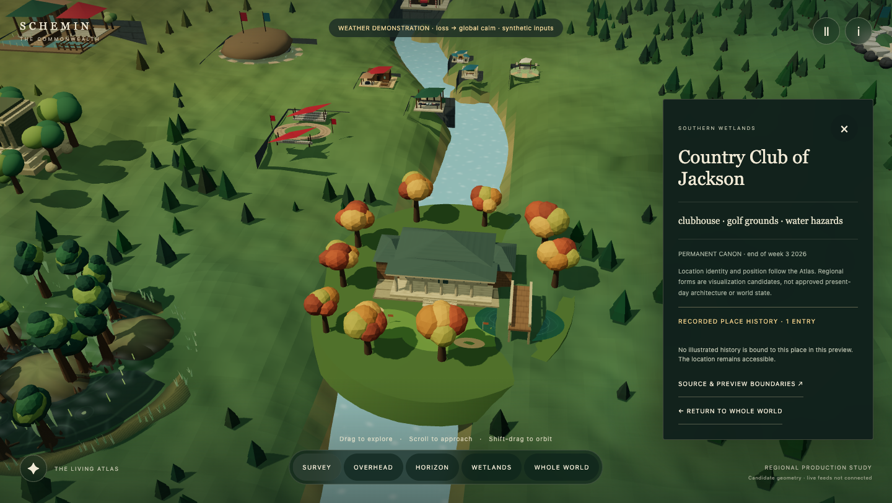
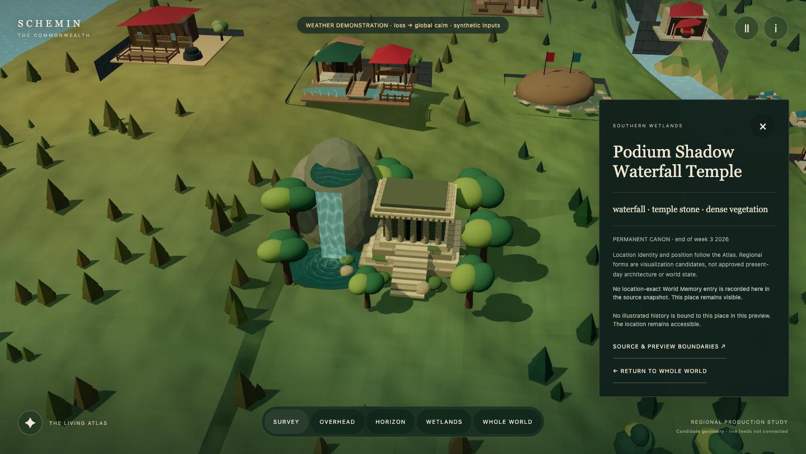
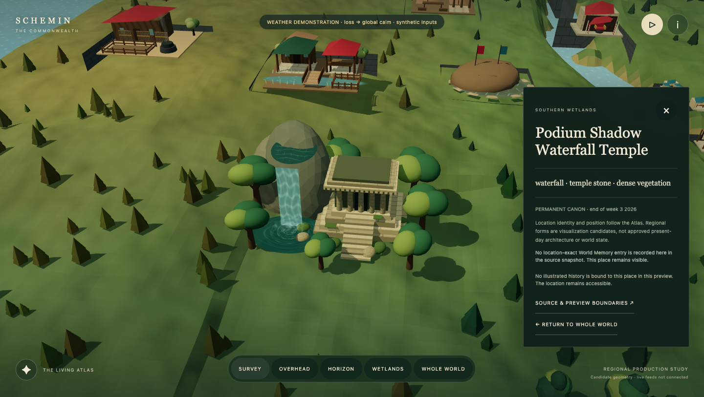
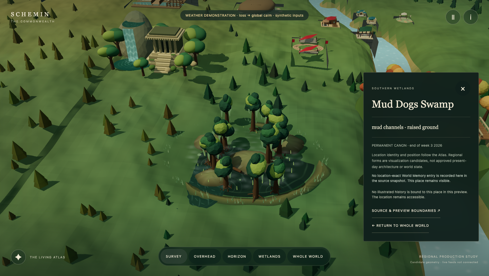
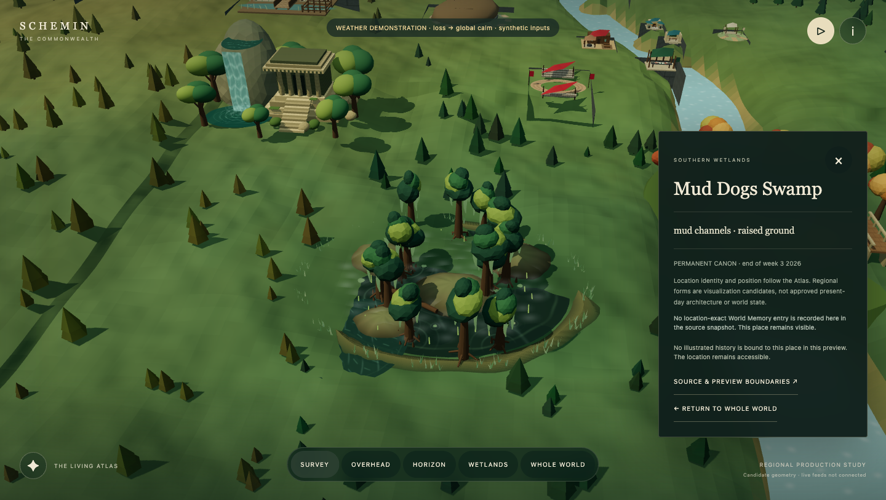

Schemin' Commonwealth / read-only engineering evidence
Southern Wetlands: water in motion
Three source-defined places, 12 unchanged physical WebGL2 screenshots, one held viewpoint per place. Compare advancing scene frames under a synthetic El Niño loss → GLOBAL_CALM weather demonstration with exactly stable frames during explicit pause. The world and all 23 Atlas locations are unchanged; this is not a published observer build.
Actual renderer: three-webgl2 · physical GPU: ANGLE (Apple, ANGLE Metal Renderer: Apple M3 Pro, Unspecified Version) · 1440 × 813 source frames · original observer revision 3c2acb6cf58b33d977f7220fe15b2b82182a54c0
Southern Wetlands · source location 1 of 3
Country Club of Jackson
LOC-COUNTRY-CLUB-JACKSON
01 / Motion during synthetic calm



Source PNG missing. Comparison unavailable.
02 / Explicit-pause control


Source PNG missing. Comparison unavailable.
Southern Wetlands · source location 2 of 3
Podium Shadow Waterfall Temple
LOC-TDS-WATERFALL-TEMPLE
01 / Motion during synthetic calm



Source PNG missing. Comparison unavailable.
02 / Explicit-pause control



Source PNG missing. Comparison unavailable.
Southern Wetlands · source location 3 of 3
Mud Dogs Swamp
LOC-MUD-DOGS-SWAMP
01 / Motion during synthetic calm



Source PNG missing. Comparison unavailable.
02 / Explicit-pause control



Source PNG missing. Comparison unavailable.
Evidence and acceptance boundary
The two moving PNGs at each place have different whole-scene hashes and advancing water-clock readings. Each paused pair has the same clock reading and identical SHA-256 image bytes. These outcomes verify whole-scene motion and exact paused stability on the observed Apple GPU, not independent water-only pixel attribution or cinematic visual quality. Weather calm does not freeze ordinary river, pond or waterfall time; the explicit pause control does.
This page is local and dependency-free. It cannot change geography, places, source authority, history, weather state, or private memo art. CANDIDATE_NOT_APPROVED: no independent visual/artist/Founder signoff, live-feed proof, publication or deployment. Original files and per-frame source, time and SHA-256 evidence: manifest.json.